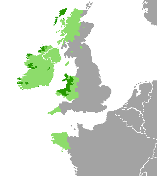

Présentation générale
Les langues celtiques sont une branche de la famille des langues indo-européennes. Elles regroupent :
- les langues celtiques continentales, parlées par les peuples celtes de l'âge du fer jusqu'à l'Antiquité tardive en Europe continentale ;
- les langues celtiques insulaires, parlées jusqu'à nos jours dans les îles Britanniques et en Bretagne. Elles se divisent elles-mêmes en deux sous-groupes nettement distincts :
- les langues gaéliques, qui comprennent aujourd'hui l'irlandais, le gaélique écossais et le mannois ;
- les langues brittoniques, qui comprennent aujourd'hui le gallois, le cornique et le breton.
Après la reconnaissance en juillet 2002 du cornique comme langue minoritaire par les autorités du Royaume-Uni, la langue bretonne, parlée en France par 225 000 locuteurs, reste la seule langue celtique moderne à ne pas avoir de statut officiel dans sa zone culturelle.
Caractéristiques générales
Les langues celtiques se caractérisent par un ensemble de mutations spécifiques à partir de l'indo-européen commun.
L'un des traits les plus caractéristiques est l’amuïssement du p à l'initiale et entre voyelles.
Ainsi, l'indo-européen *ph₂tḗr « père »
(en latin pater, en anglais father)
devient *ɸatīr en celtique commun, d'où vieil irlandais athair et
athir, en irlandais athair, gaulois *atir (nominatif), ater (vocatif) ou
encore pŗto- / pértus « le gué » (en latinportus, en anglais ford)
devenant *ɸritus en celtique commun, d'où *rrɨd en brittonique
(en vieux breton rit; en vieux cornique rid; en vieux gallois rit, en gallois rhyd),
*rito- en gaulois comme dans l'ancien nom de Limoges,
dont la dénomination gallo-romaine est Augustoritum « le gué d'Auguste »
ou encore Chambord de *camborito-, le gué sur la courbe du fleuve.
Le b n'existant pas à date ancienne, le gʷ i.e. passe
généralement à b comme dans le nom du bœuf, en irlandais bó, breton buoc'h.
Les langues celtiques dans leur ensemble sont affectées par la
modification phonétique qui porte le nom de lénition
(affaiblissement des consonnes qui se trouvent entre deux voyelles).
Ainsi, le mot irlandais
beatha « vie » se prononce /ˈbʲahə/.
Tout comme le mot irlandais beatha qui signifie la vie .

Sur l'image nous pouvons voir qu'il y a une minorité de personne parlant des langues celtiques en irlande, dans le nord de l'écosse,
au sud-est de l'angleterre et au pays de Galles. On voit également qu'il les langues celtiques sont parlées majoritairement dans les populations d'irlande de l'ouest,
de l'ouest du Pays de Galles et dans les îles du nord de l'Ecosse